Debugger
Flixel comes with a fairly powerful debugging overlay. You can open it with one of the default toggle keys (F2, ` and \ with a QWERTY keyboard layout). Note that these are configurable via FlxG.debugger.toggleKeys. Alternatively, you can do the same in code via the FlxG.debugger.visible flag.
Note that the debugger does not exist when compiling with FLX_NO_DEBUG. With the default Project.xml, this is the case in release mode. On the command line, use the -debug flag to build in debug mode instead (e.g. lime test neko -debug).
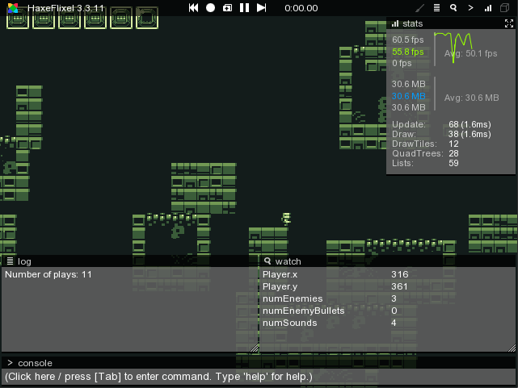
Debug draw
FlxG.debugger.drawDebug can be enabled to display the hitboxes of every FlxObject added to the state (alternatively, press the cube button in the upper right corner of the debugger).
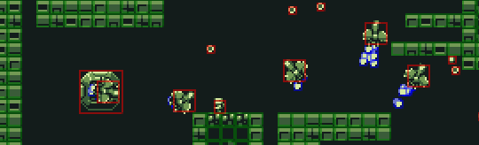
The hitboxes are color-coded based on the collision properties. For FlxObject and FlxSprite this means:
- Blue for
allowCollisions == NONE - Green for
immovableobjects - Red otherwise
The color is customizable via the debugBoundingBoxColor property.
The behavior of tiles in FlxTilemap is slightly different:
- Blue for
allowCollisions == NONE - Green for
allowCollisions == ANY - Pink for other values of
allowCollisions
The Log Window
The log window is used to display traces and can be accessed via FlxG.log. You can also redirect any trace()-calls to it with FlxG.log.redirectTraces = true;. Using it is mostly a matter of preference, some people prefer to have their traces displayed in their IDE of choice (FlashDevelop's output panel for example).
Some flixel-internal errors will also be output to the log window.
Log styles
It's possible to customize things like text color, size, style or add a prefix by using log styles. FlxG.log.warn(), error() and notice() use pre-defined log styles.
Here's an example of how you could differentiate each trace by the player from others by adding a [Player] prefix and printing it in green:
var playerAction = new LogStyle("[Player]", "00FF40");
FlxG.log.advanced(" Shoot", playerAction);
HAXEThe Watch Window
It's very common to use trace()-calls to output the value of certain variables for debugging. However, this approach doesn't scale very well - at 60 fps, tracing the values of multiple variables results in a flood of messages. Breakpoints-debugging is great to inspect a game's internal state, but doesn't help when interrupting the execution is not an option, for example when debugging input logic.
This is where the watch window comes into play. It displays the values of variables using reflection. For example, to keep track of the player's position:
FlxG.watch.add(_player, "x");
FlxG.watch.add(_player, "y");
HAXEThe display string does not have to be the same as the variable's name, "numEnemies" is much more descriptive than "length" in this example:
FlxG.watch.add(_enemies, "length", "numEnemies");
HAXE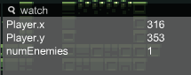
For static variables, you pass the class instead of an object:
FlxG.watch.add(FlxG, "height");
HAXEIt's also possible to edit the displayed values by clicking on them, entering a new value in the text field and pressing enter to confirm. This even works with FlxPoint objects.
To remove a watch entry again, simply call FlxG.watch.remove(object, variableName).
Quick watches
Quick watches are a lightweight alternative to a regular watch entry. They don't require a variable, they simply store a value for a String name. The following example stores the result of FlxG.keys.anyPressed(["UP", "W"]) under the name "Up key pressed" - this is updated every frame since it happens in update().
override public function update():Void
{
super.update();
FlxG.watch.addQuick("Up key pressed", FlxG.keys.anyPressed(["UP", "W"]));
}
HAXETo remove a quick watch entry, call FlxG.watch.removeQuick(name).
Quick watch values can not be modified.
Mouse watch
FlxG.watch.addMouse() is a convenient helper to display the current mouse position in the watch window. This can be useful to find the right coordinates to position UI elements at. You can also use the console command watchMouse to call this function.
The Stats Window
The stats window displays some basic profiling info:
- FPS value
- Memory usage in MB
- The amount of
update()calls this frame (and the time it took in ms) - The amount of
draw()calls this frame (and the time it took in ms) - The size of the
FlxQuadtreepool for collision detection - The size of the
FlxList(used for quad trees) pool
3 and 4 are especially useful when it comes to performance optimization ("Do I need to optimize my rendering or my update-logic?"). Of course this is only very basic data, profiling tools like Adobe Scout or hxScout provide much more detailed information.
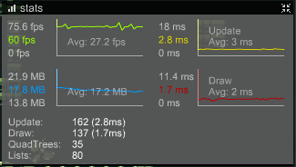
The Bitmap Log Window
The Bitmap Log can be used to display BitmapData objects via FlxG.bitmapLog.add(bitmapData). This can be useful to debug logic that manipulates some BitmapData. The window provides a slideshow to scroll through logged bitmaps. You can use the middle mouse button to move the graphic around and the mouse wheel to zoom in and out.
You can also inspect flixel's internal BitmapData cache by calling FlxG.bitmapLog.viewCache() or entering the console command viewCache.
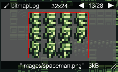
The Console Window
The console allows a limited subset of Haxe code to be parsed and executed at runtime via hscript. Commands like state._player.x = 50 or state._player.jump() as you'd expect. Especially on targets with long compile times, this can speed up development substantially.
It also supports auto completion for class fields and registered functions / objects / classes, similar to the completion popups in IDEs (albeit without documentation, which is not available at runtime).
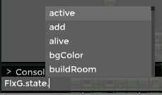
state is the starting point for hscript and needs to be registered to the console to be available - Flixel already does this for you. The same goes for a few classes like FlxG or Math. To register further objects or classes, call FlxG.console.registerObject().
By default, the game is paused when the console text field receives focus. After a command is executed, the game progresses one frame so the effects can be seen.
The console stores executed commands (use the up and down keys to cycle through them). This history is persistent across executions of your game (but not across different target platforms).
Adding custom commands
Functions can also be registered to the console directly as commands via FlxG.console.registerFunction(). Here's an example with a function called "spawnEnemy", spawning a new enemy at the current mouse position in the Mode demo.
// in PlayState#create()
FlxG.console.registerFunction("spawnEnemy", function() {
var mousePos = FlxG.mouse.getWorldPosition();
var enemy = _enemies.recycle(Enemy);
enemy.init(Std.int(mousePos.x), Std.int(mousePos.y), _enemyBullets, _bigGibs, _player);
});
HAXETracker Windows
Tracker windows are a convenient way to inspect the most important properties of a class / object. Each tracker window is basically a watch window instance. It's the only window type that can be closed.
A tracker profile defines the properties that should be watched for a specific class. Let's take a look at the pre-defined tracker profile for FlxSprite:
new TrackerProfile(FlxSprite, ["frameWidth", "frameHeight", "alpha", "origin", "offset", "scale"], [FlxObject])
HAXEThe first argument determines the class the profile belongs to, the second is an Array<String> containing the property names. The third argument is a list of extensions - in this case just FlxObject. This means that the properties defined in the tracker profile of FlxObject will be added to tracker windows for FlxSprite as well. This works recursively - FlxObject "extends" the FlxBasic tracker profile, so any properties of that profile will be added as well. This is why FlxG.debugger.track(_player) in Mode's PlayState#create() creates a window with a longer list of properties than you'd initially expect from the FlxSprite profile:
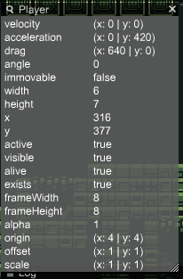
Alternatively, you can use the console to create tracker windows at runtime:
track(FlxG.state._player)
The real power of tracker windows comes with the ability to define custom profiles, for example for the Player class in Mode:
FlxG.debugger.addTrackerProfile(new TrackerProfile(Player, ["isReadyToJump", "_shootCounter", "_jumpPower"], [FlxBasic]));
HAXE(Note: calling addTrackerProfile() causes a crash on the latest haxelib release due to a bug. As a workaround, you can call FlxG.debugger.track(null); beforehand).
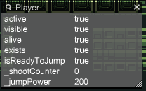
The VCR
Flixel's VCR feature (recording and replaying via FlxG.vcr) is mostly disabled by default and can be activated with the FLX_RECORD define. Even so, a few features are still available by default via the middle three buttons of the debugger:
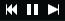
The left button resets the current state via FlxG.resetState().
The middle button pauses / unpauses the game.
The right button pauses the game if it isn't already paused and skips ahead exactly one frame (one update() and one draw() call). This can be very useful for debugging certain issues.
If FLX_RECORD is defined, two more buttons are available:
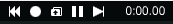
The circle starts a new recording - it also resets the current state, since the VCR does not support recordings that start mid-state. If a recording has already been started, the button stops it and opens a file dialog to save it.
The button with the folder icon right allows loading record files and replaying them.
Adding Debugger Buttons
You can add custom buttons to the debugger header using FlxG.debugger.addButton(). This is what FlxNapeState from flixel-addons does if you use it - it adds a convenient "N" button to toggle Nape's debug draw.
Debugger buttons are persistent across states - FlxG.debugger.removeButton() has to be called manually to remove state-specific buttons.
Debugger Layouts
A debugger layout determines the initial position and size of each debugger window. The available layouts are described in the FlxDebuggerLayout enum. You can change the current layout by calling FlxG.debugger.setLayout().
Here's an example of FlxDebuggerLayout.RIGHT:
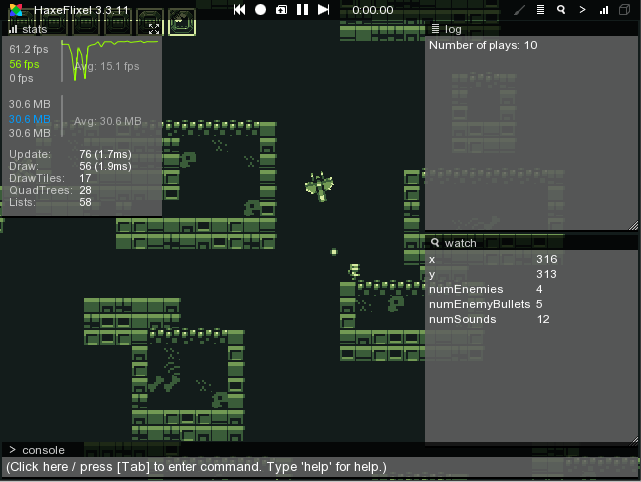
The Interaction Tool
The Interaction Tool, enabled by the  icon in the debugger overlay, allows you to change game elements, e.g. move sprites, while the game is still running. Click here to learn more about the interaction tool.
icon in the debugger overlay, allows you to change game elements, e.g. move sprites, while the game is still running. Click here to learn more about the interaction tool.
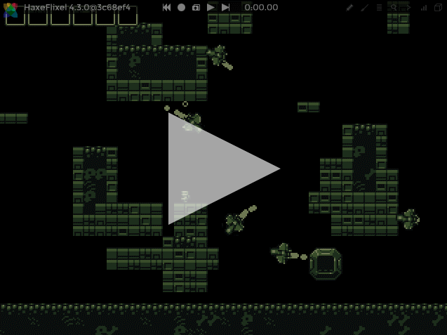